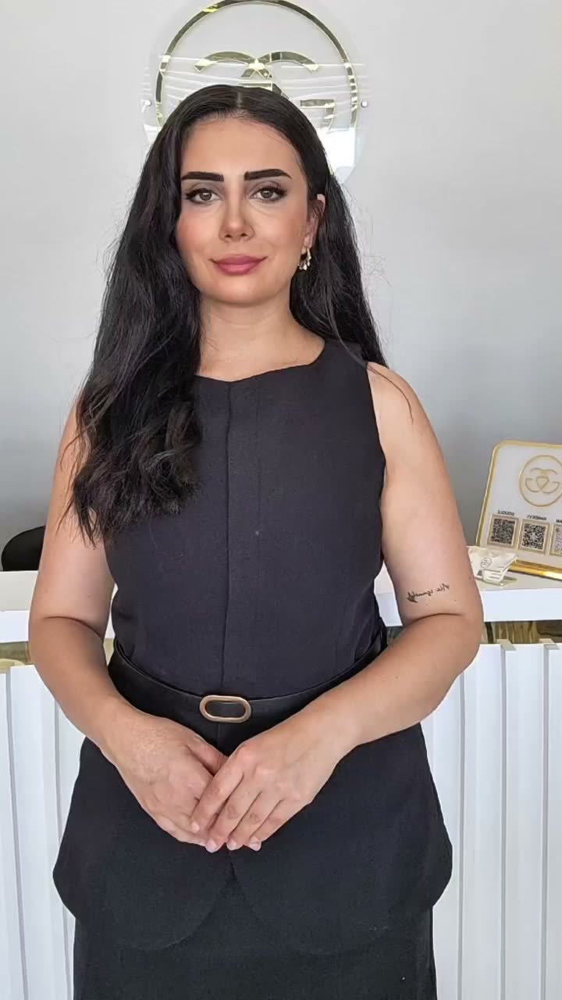
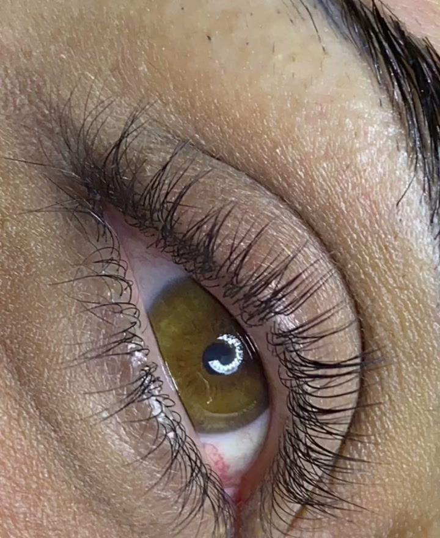
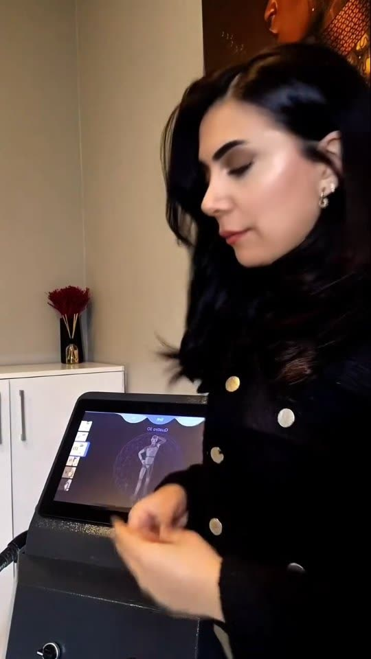
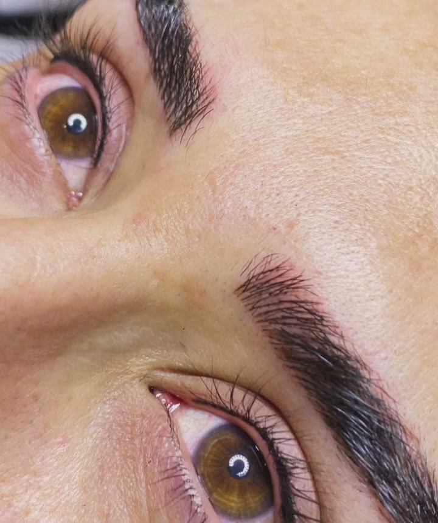
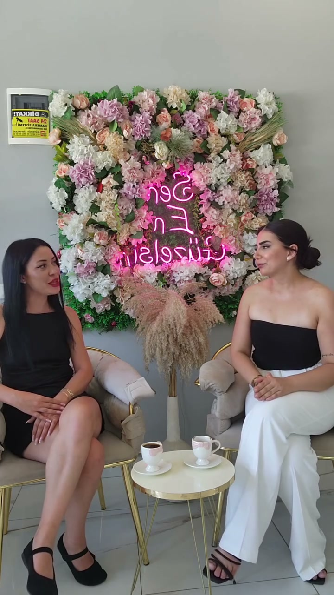
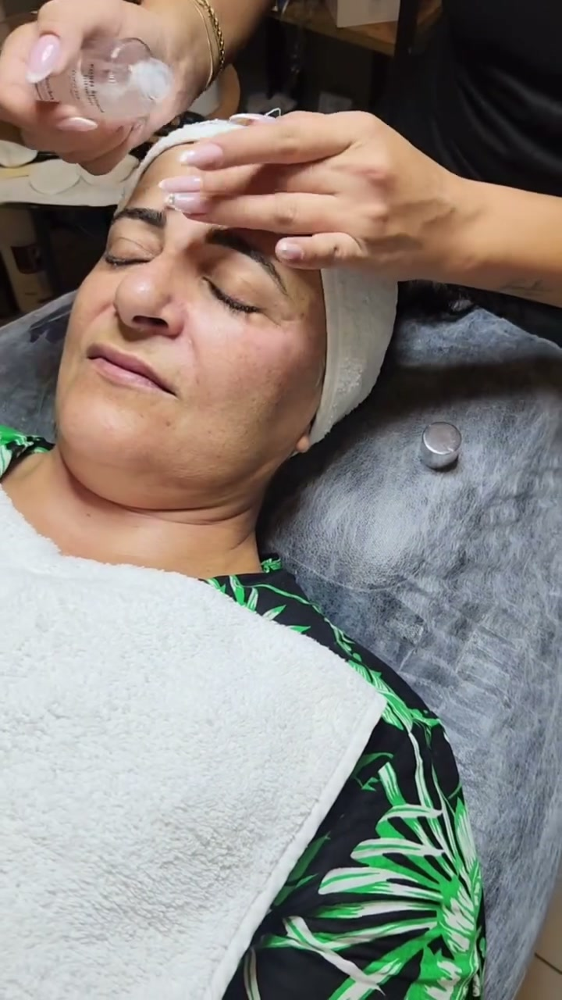
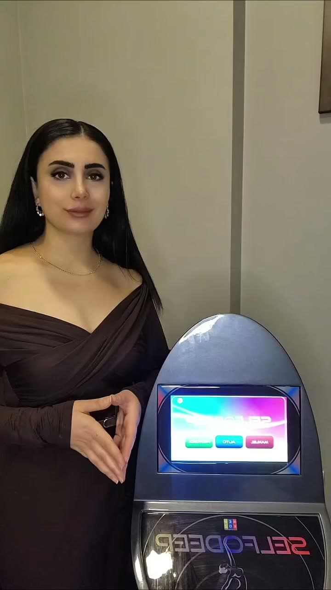

Doğru bakım, doğru analizle başlar.
Gülçin Güç, salonun kurucusu
Cilt bakımı, lazer epilasyon, kalıcı makyaj, kirpik lifting ve bölgesel incelme. Kavaklı’da, Prestij Marina’daki salonumuzda.
5,0 Google’da 62 yorumPzt–Cmt 10:00–19:00
Nasıl çalışıyoruz?
Her cilt ve her yüz farklı. Bu yüzden önce dinliyor, sonra planlıyoruz.
- AnalizCildinize, kaş ve göz yapınıza, beklentinize birlikte bakıyoruz.
- Size özel planHangi uygulamanın, kaç seansla ve hangi aralıkla yapılacağını açıkça anlatıyoruz.
- Uygulama ve takipSeanslar arasında ara kontrol yapıyor, uygulama sonrası nelere dikkat etmeniz gerektiğini söylüyoruz.
“Her şeyi en ince ayrıntısına kadar anlatıyor ve ihtiyacınız olmayan bir şeyi yapmıyor.”Fatma Ş., Google yorumu
Hizmetlerimiz
Fiyat ve seans bilgisi için WhatsApp’tan yazabilirsiniz.
-
Cilt bakımı
Cilt analiziyle seçilen profesyonel protokoller.
Green PeelNAD + PDRNAnti-aging bakımSırt bakımı -
Lazer epilasyon
Düzenli seanslarla, cilt ve kıl yapınıza göre planlanır.
Kadın ve erkekSeans planı -
Kalıcı makyaj
Yüz oranına uygun, doğal görünüm hedefiyle.
MicrobladingDiplinerBabylinerDudak renklendirme -
Kirpik ve kaş
Kendi kirpik ve kaşlarınızın en bakımlı hâli.
Kirpik liftingİpek kirpikKaş laminasyonuKaş tasarımı -
Bölgesel incelme
Planlı seans programı ve ara kontrollerle.
SelfodeepG8 -
Saç ve leke bakımı
Saç derisi bakımı ve bölgesel ton eşitsizliği uygulamaları.
İğnesiz mezoterapiSaç vitaminiLeke protokolü
Salonumuzda protez tırnak da yapılıyor.
Hakkımızda
Gülçin Güç Güzellik Salonu Nisan 2023’te açıldı. Salonun sahibi Gülçin Hanım; yorumlarda en çok onun bilgisi, dürüstlüğü ve nezaketi anılıyor.
Üçüncü yaşımızı bu yıl, bize güvenen misafirlerimizle birlikte kutladık.
- 2023Açılış yılı
- 5,0Google puanı
- 62Google yorumu
- 6 günPazartesi–Cumartesi
Salonumuzdan

Kirpik lifting 
Lazer epilasyon 
Dipliner 
Salonumuzun çiçekli köşesi 
Cilt bakımı 
Bölgesel incelme
Misafirlerimiz ne diyor?
5,0Google’da 62 yorum
Gülçin Hanım işini çok titizlikle yapıyor. Güzellik merkezlerinde sürekli bir şey satmak isteyenlerden yılmış biriydim; Gülçin Hanım gittiğim bütün o yerlerden çok farklı.
Birçok yerde sonuç alamadığım epilasyonda burada gayet iyi sonuç aldım. Gülçin Hanım ve ekibine teşekkür ederim, gerçekten ilgili ve güler yüzlüler.
Arkadaşımın tavsiyesiyle tanıştım. Leke protokolü ve lazer epilasyon yaptırdım, çok memnun kaldım. Temiz ve hijyenik olması benim için bir artı.
Hem ortam çok temiz ve huzurluydu hem de çalışanlar oldukça ilgili ve profesyoneldi. Uygulama sırasında her adımı detaylıca anlattılar, kendimi çok rahat hissettim.
Aldığım her hizmetinden memnun kaldığım bir yer. Aklımda hiç soru işareti bırakmıyorlar ve ihtiyaca göre çözüm sunuyorlar.
Lazer ve cilt bakımı yaptırdım. Yaptırdığım tüm işlemlerden çok memnun kaldım. Gülçin Hanım’a bilgisi, tecrübesi ve ilgisi için çok teşekkür ediyorum.
Randevu ve iletişim
- Adres
- Prestij Marina, Kavaklı Mah. Kocatepe Cad. No: 319 C, No: 11, Beylikdüzü
- Açık
- Pazartesi–Cumartesi10:00–19:00PazarKapalı
- Telefon ve WhatsApp
- 0554 364 09 97